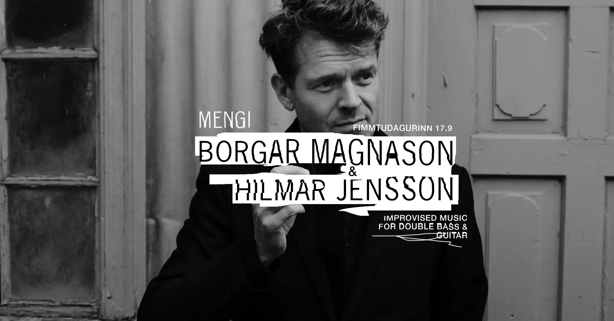
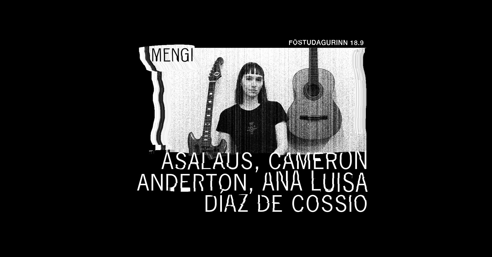
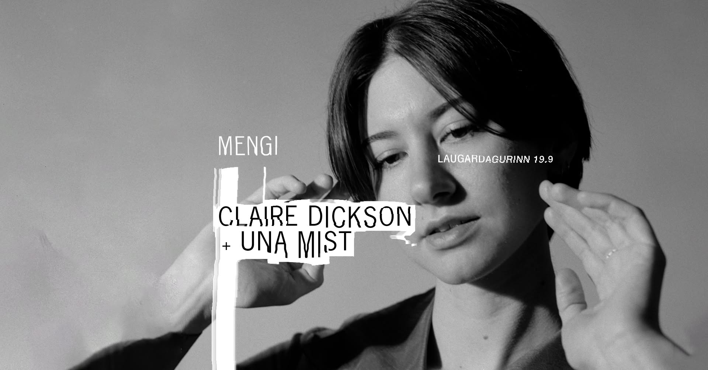
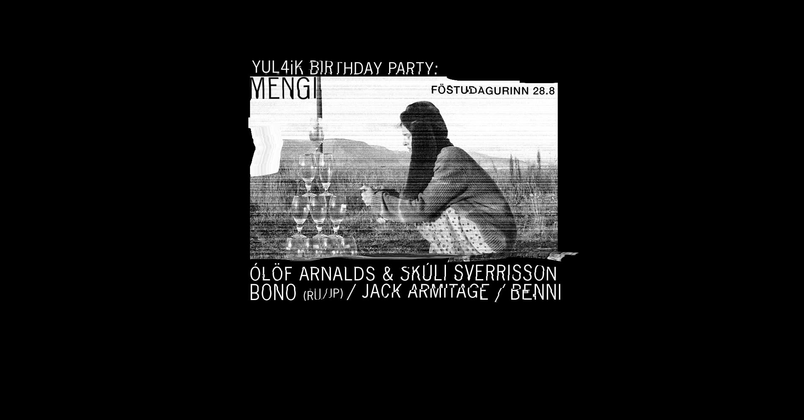
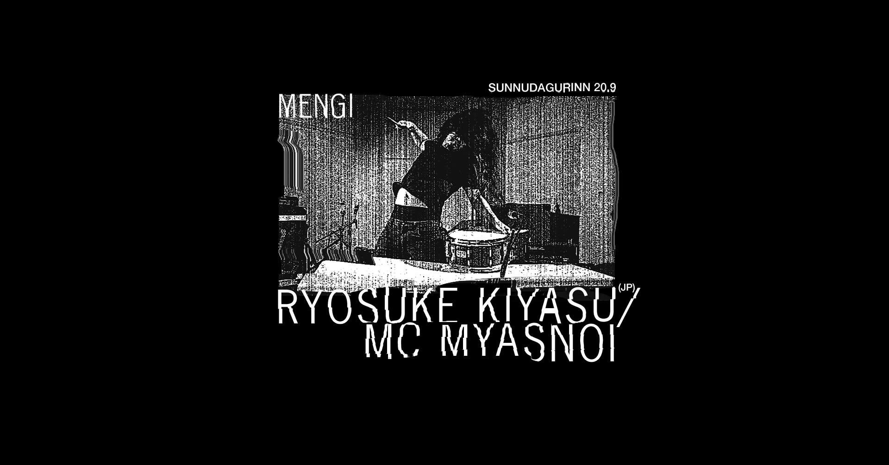
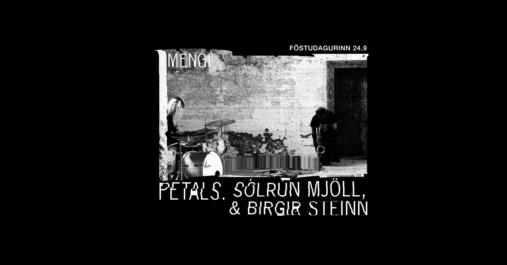
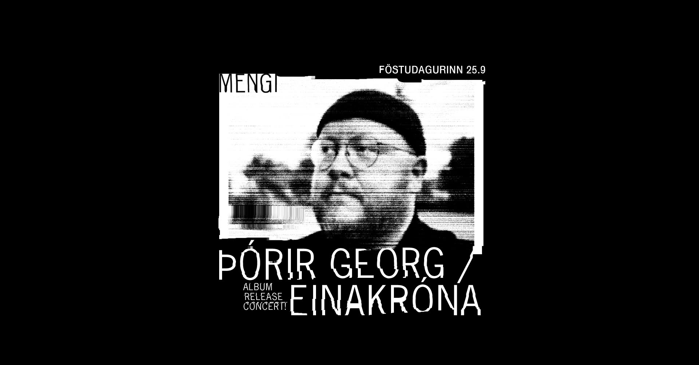
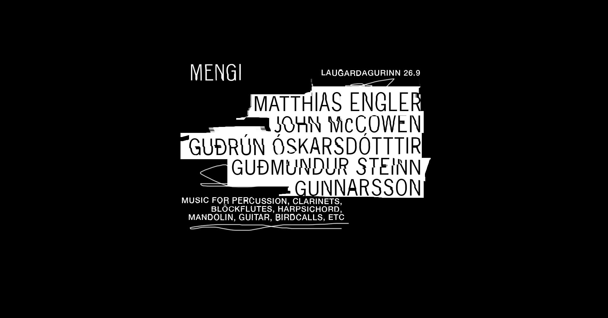

Upcoming Events

THU 17.09 Borgar Magnason & Hilmar Jensson
Tickets Thursday, September 17th BORGAR MAGNASON & HILMAR JENSSON doors 19:30 / show 20:00 2500kr / 2000kr students / pay what u can An evening of Improvisations and spontaneous inventions With Borgar Magnason (double bass) & Hilmar Jensson (guitar) Join us for an evening of improvisation featuring double bass player Borgar Magnason and guitarist Hilmar Jensson. Both musicians bring a wealth of experience from diverse genres, blending elements of jazz, classical, and contemporary music. Magnason is celebrated for his innovative techniques on the double bass, while Jensson’s guitar work showcases a unique approach to sound and texture. This concert promises to be an exploration of creativity, as both artists push the boundaries of their instruments to create a captivating soundscape. Expect an evening filled with spontaneity and experimentation, where each note is an invitation to experience music in new and unexpected ways. cover photo by Antje Taiga Come and witness the magic that happens when two talented improvisers come together to craft something truly special!

FRI 18.09 Asalaus, Cameron Anderton, & Ana Luisa Díaz de Cossio
Tickets Friday, September 18th ASALAUS, CAMERON ANDERTON, & ANA LUISA DÍAZ DE COSSIO doors 19:30 / show 20:00 2500kr / 2000kr students / pay what u can ASALAUS (Ása Önnu Ólafsdóttir, she/her, b. 2000) is a sound artist, musician and composer hailing from Reykjavík, Iceland. Her practice focuses on the relationship between object and sound. She frequently uses magnetic material such as tape in her work and material often guides the process and determines the outcome of a piece. As a composer and musician, she works with graphic notation, extended techniques and integration of live electronics, and has released a few albums, both as Asalaus and as a member of the bands Ateria and Gaffer Ensemble. Ása's works have been commissioned, exhibited and performed widely in Europe and America. She holds an MFA in sound art from Columbia University. CAMERON ANDERTON is a composer and performer who works across the mediums of composition, installation and improvisation. His work is deeply rooted in the traditional cultural landscapes of Scotland and Iceland, and he has presented his work in venues such as Harpa, Iðnó and the City of Reykjavik Theatre in collaboration with leading musical groups and independent arts groups. ANA LUISA DÍAZ DE COSSIO is an improviser-composer whose work traverses the space between social structures, individuality, and spontaneity, exploring resonance in both physical and cultural spaces. Through extreme extended techniques and experimental methodologies, I challenge conventional approaches to instrumental playing, exploring the possibilities and limits of sound. My music is deeply informed by a political and social awareness of the systems that shape our societies, focusing on how personal forms of expression emerge through collaboration, improvisation, and deep listening. Growing up in Mexico and regularly crossing the border to study in San Diego, questions of migration, access, and agency remain central to my practice. I view performers as active collaborators whose unique histories, instincts, and lived experiences shape the music alongside me. This collaborative impulse has led me to work across different cultural and geographic contexts through creative projects and residencies. My work is about creating intentional spaces where people can experiment, bring their whole selves, and bring different ways of knowing into conversation with one another through sound.

SAT 19.09 Claire Dickson (+ Elias Brown) / Una Mist
Tickets Saturday, September 19th CLAIRE DICKSON (DE) UNA MIST doors 19:30 / show 20:00 2500kr / 2000kr students / pay what u can Claire Dickson (+ Elias Brown) Claire Dickson, with Elias Brown, will perform music from her latest album Balance, as well as excerpts from a collaboratively composed opera in progress based on the story of Nastagio degli Onesti from Boccaccio’s Decameron. Claire Dickson is a vocalist and producer composing emergent, embodied song. She considers song to be an experimental and flexible artistic modality, and her work utilizes microphones, pedals, synthesizers, field recordings, acoustic instruments, and draws from lineages of improvisation, extended vocal technique, sampling, and deep listening. Her solo work includes three albums, Starland (2022), The Beholder (2024, New Amsterdam Records), and Balance (2026, New Amsterdam Records), and an EP, Through (2025). Her music has been praised as “enticingly atmospheric… growing in depth and substance on return visits,” by The Wire. Elias Brown is a conductor, composer, improviser and curator based in Berlin. He seeks to create intentional spaces for gathering and collective listening — whether in concert halls, listening bars, lecture rooms or caves. He has recently collaborated with the Iceland Symphony Orchestra, Rundfunk-Sinfonieorchester Berlin, Danish Chamber Orchestra, Trondheim Symphony Orchestra, and will debut with the LA Phil later in February. He has presented electroacoustic work at ICA London, Krama Festival, and Mata Festival. He also works as a guest teacher at University of the Arts, Berlin, lecturing on concert curation and conducting for new music. UNA MIST is an artist from Reykjavík. She creates playful and emotional pop music using experimental sound-design techniques. She also designs and builds her own ceramic seashell MIDI controllers that she uses to perform on stage.

FRI 28.08 YUL4iK BDAY CONCERT
Tickets Friday, August 28th YUL4iK BDAY CONCERT feat: ÓLÖF ARNALDS & SKÚLI SVERRISSON JACK ARMITAGE ONLINE APPEARANCE BONO (RU/JP) BENNI 17:00-19:00: Hættuspil (amplified board game, everyone is welcome to join) 19:00-22:00: live music and networking: 22:00 BIRTHDAY CAKE IS CUT and quite film screening of Spirited Away 23:00 FIN On the last Friday of Summer, Mengi will host a fantastic warmhearted event that is specifically curated to celebrate life, art, music, friendship and full moon. Yulia will turn 30 and the moon will turn full. The event is open for anyone, you can bring birthday presents or not, no one will be turned away. The event is pay what you can. Suggested donation of 2.500kr

SUN 20.09 Ryosuke Kiyasu / MC Myasnoi
Tickets Sunday, September 20th RYOSUKE KIYASU MC MYASNOI doors 19:30 / show 20:00 2500kr / 2000kr students / pay what u can “Ryosuke Kiyasu will make you look at the drums in a whole new way.” - VICE Magazine RYOSUKE KIYASU began his career as a snare drummer in Canada in 2003. A driving force in the avant-garde music scene for over two decades, he has been a prolific solo performer while also contributing to the group SETE STAR SEPT and having served as the drummer for Keiji Haino’s legendary ensemble, Fushitsusha. In 2018, a video of his live performance in Berlin went viral, garnering over 23 million views and sparking global conversation. This phenomenon led to features in major international media outlets, including BBC News and VICE. More recently, his unique performance style was highlighted in the British fashion magazine i-D, further cementing his influence across both music and contemporary culture. His work has earned high acclaim within the world of classical percussion, leading to his invitation as a main guest for two consecutive editions of Germany’s Überschlag Festival, one of the world's largest biennial percussion festivals. In 2025, a dedicated experimental music festival titled "Kiyasu Fest" was organized by local fans in Bristol, UK, in his honor. From 2026, Kiyasu has been appointed for a global promotion with Pearl Drums, the world’s leading drum manufacturer, serving as a key figure in the brand’s major international campaigns. Beyond traditional musical boundaries, he has expanded his reach through collaborations with the fashion label Our Legacy and performances in contemporary art contexts. Performing over 200 shows annually across the globe, Ryosuke Kiyasu continues to redefine the very concept of music. + MC MYASNOI MC MYASNOI plays experimental electro emo anime doom metal for you, currently under the influence of Kurt Cobain and chaos magic. Never look the bass player in the eye.

FRI 24.09 petals, Sólrún Mjöll, Birgir Steinn
Tickets Friday, September 24th petals, Sólrún Mjöll, & Birgir Steinn doors 19:30 / show 20:00 2500kr / 2000kr students / pay what u can petals - reeds, flutes, violin, piano, small percussion Sólrún Mjöll - drum kit Birgir Steinn Theodórsonn - double bass, tuba

FRI 25.09 Þórir Georg / Einakróna
Tickets Friday, September 25th ÞÓRIR GEORG EINAKRÓNA doors 19:30 / show 20:00 2500kr / 2000kr students / pay what u can On September 12th Þórir Georg releases his album “Cheer up” via Reykjavík Record Shop. To celebrate the occasion Reykjavík´s indie-folk collective Einakróna will join him for a release show at legendary downtown venue Mengi on September 25th. What began as Björk Magnúsdóttir’s solo pseudonym has grown into a five-piece Icelandic indie folk band with a deeper and more ambitious sound. Their debut album Rembihnútar explores loss, change and impossible relationships, all while embracing the joy of making deeply personal music. The band draws inspiration from indie folk music and the lyrics are poetic and personal. https://einakrona.bandcamp.com/ Þórir Georg is a veteran of Icelandic underground, extreme and experimental music. In the last 25 years or so he has pushed his exploration of song and sound further and wider than most would consider sensible. Having made a habit of eschewing all notions of success and careerism in favor of artistic satisfaction he remains lurking in the shadows of the underground. On his new album “Cheer up” Þórir mixes the influences of 60s psychedelic pop with the experimental lo-fi scene of the 90s to create his own brand of experimental pop music that might appeal to fans of such artists as Harry Nilsson, Daniel Johnston, Stephen Malkmus or Syd Barrett. For the show Þórir will supplement his distinct guitar playing and voice with various gadgets and pre-recorded phantom bands to perform a selection of songs from the new album as well as digging through his extensive back catalog. https://thorirgeorg.bandcamp.com/ einakrona.bandcamp.com

SAT 26.09 Engler/McCowen/Óskarsdóttir/Gunnarsson
Tickets Saturday, September 26th MUSIC FOR PERCUSSION, CLARINETS, BLÖCKFLUTES, HARPSICHORD, MANDOLIN, GUITAR, BIRDCALLS, ETC. doors 19:30 / show 20:00 2500kr / 2000kr students / pay what u can MATTHIAS ENGLER: PERCUSSION JOHN McCOWEN: CLARINETS/BLÖCKFLUTES GUÐRÚN ÓSKARSDÓTTIR: HARPSICHORD GUÐMUNDUR STEINN GUNNARSSON: MANDOLIN, GUITARS, BIRDCALLS, ETC.